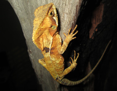

El turipache de hojarasca (Corytophanes percarinatus) es una especie de lagarto que pertenece a la familia Corytophanidae. Es nativo de Chiapas (México), Guatemala, sudoeste de Honduras y El Salvador.
Es una especie que mide hasta 110 mm de longitud hocico cloaca (LHC), la longitud de la cola llega a ser hasta 2.5 veces más que la LHC. El cuerpo está comprimido lateralmente y en la cabeza se presenta un casco que se proyecta hasta la parte posterior de ésta. Las escamas dorsales del cuerpo son largas, imbricadas y lisas, las escamas ventrales son largas, imbricadas y fuertemente quilladas, generalmente son redondeadas en su parte posterior. Carece de poros femorales (Townsend et al. 2004).
El dorso presenta sombras de tono café, la parte lateral del cuerpo presenta reticulaciones de color amarillo o verde pálido, y algo de coloración café, la coloración ventral es clara. Además, en la parte posterior del ojo se presenta una mancha de color café oscuro que se extiende hasta la parte anterior del tímpano (Townsend et al. 2004).
Caracteristicas